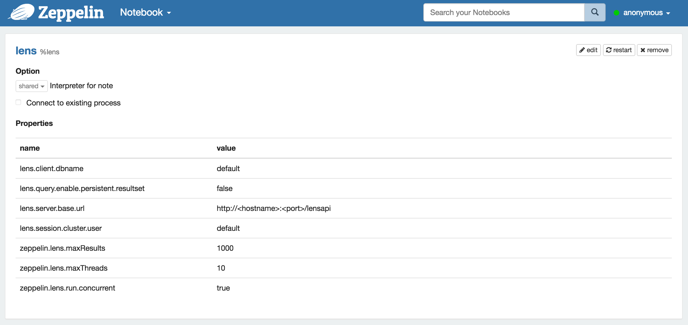
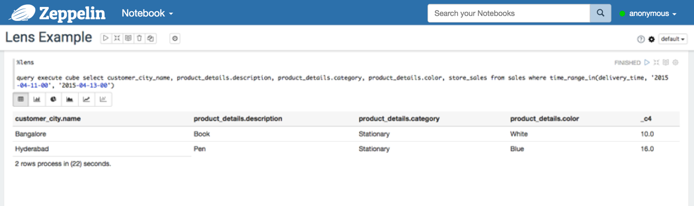

Lens Interpreter for Apache Zeppelin
Overview
Apache Lens provides an Unified Analytics interface. Lens aims to cut the Data Analytics silos by providing a single view of data across multiple tiered data stores and optimal execution environment for the analytical query. It seamlessly integrates Hadoop with traditional data warehouses to appear like one.

Installing and Running Lens
In order to use Lens interpreters, you may install Apache Lens in some simple steps:
- Download Lens for latest version from the ASF. Or the older release can be found in the Archives.
- Before running Lens, you have to set HIVEHOME and HADOOPHOME. If you want to get more information about this, please refer to here. Lens also provides Pseudo Distributed mode. Lens pseudo-distributed setup is done by using docker. Hive server and hadoop daemons are run as separate processes in lens pseudo-distributed setup.
- Now, you can start lens server (or stop).
./bin/lens-ctl start (or stop)
Configuring Lens Interpreter
At the "Interpreters" menu, you can edit Lens interpreter or create new one. Zeppelin provides these properties for Lens.
| Property Name | value | Description |
|---|---|---|
| lens.client.dbname | default | The database schema name |
| lens.query.enable.persistent.resultset | false | Whether to enable persistent resultset for queries. When enabled, server will fetch results from driver, custom format them if any and store in a configured location. The file name of query output is queryhandle-id, with configured extensions |
| lens.server.base.url | http://hostname:port/lensapi | The base url for the lens server. you have to edit "hostname" and "port" that you may use(ex. http://0.0.0.0:9999/lensapi) |
| lens.session.cluster.user | default | Hadoop cluster username |
| zeppelin.lens.maxResult | 1000 | Max number of rows to display |
| zeppelin.lens.maxThreads | 10 | If concurrency is true then how many threads? |
| zeppelin.lens.run.concurrent | true | Run concurrent Lens Sessions |
| xxx | yyy | anything else from [Configuring lens server](https://lens.apache.org/admin/config-server.html) |

Interpreter Binding for Zeppelin Notebook
After configuring Lens interpreter, create your own notebook, then you can bind interpreters like below image.

For more interpreter binding information see here.
How to use
You can analyze your data by using OLAP Cube QL which is a high level SQL like language to query and describe data sets organized in data cubes. You may experience OLAP Cube like this Video tutorial. As you can see in this video, they are using Lens Client Shell(./bin/lens-cli.sh). All of these functions also can be used on Zeppelin by using Lens interpreter.
create database newDb
use newDb
create storage your/path/to/lens/client/examples/resources/db-storage.xml
create dimension your/path/to/lens/client/examples/resources/customer.xml
dimension show fields customer
dimension show joinchains customer
create cube your/path/to/lens/client/examples/resources/sales-cube.xml
cube show fields sales
cube show joinchains sales
create dimtable your/path/to/lens/client/examples/resources/customer_table.xml
create fact your/path/to/lens/client/examples/resources/sales-raw-fact.xml
dimtable add single-partition --dimtable_name customer_table --storage_name local --path your/path/to/lens/client/examples/resources/customer-local-part.xml
fact add partitions --fact_name sales_raw_fact --storage_name local --path your/path/to/lens/client/examples/resources/sales-raw-local-parts.xml
query execute cube select customer_city_name, product_details.description, product_details.category, product_details.color, store_sales from sales where time_range_in(delivery_time, '2015-04-11-00', '2015-04-13-00')

These are just examples that provided in advance by Lens. If you want to explore whole tutorials of Lens, see the tutorial video.
Lens UI Service
Lens also provides web UI service. Once the server starts up, you can open the service on http://serverhost:19999/index.html and browse. You may also check the structure that you made and use query easily here.